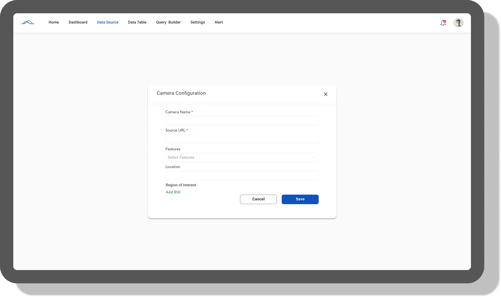
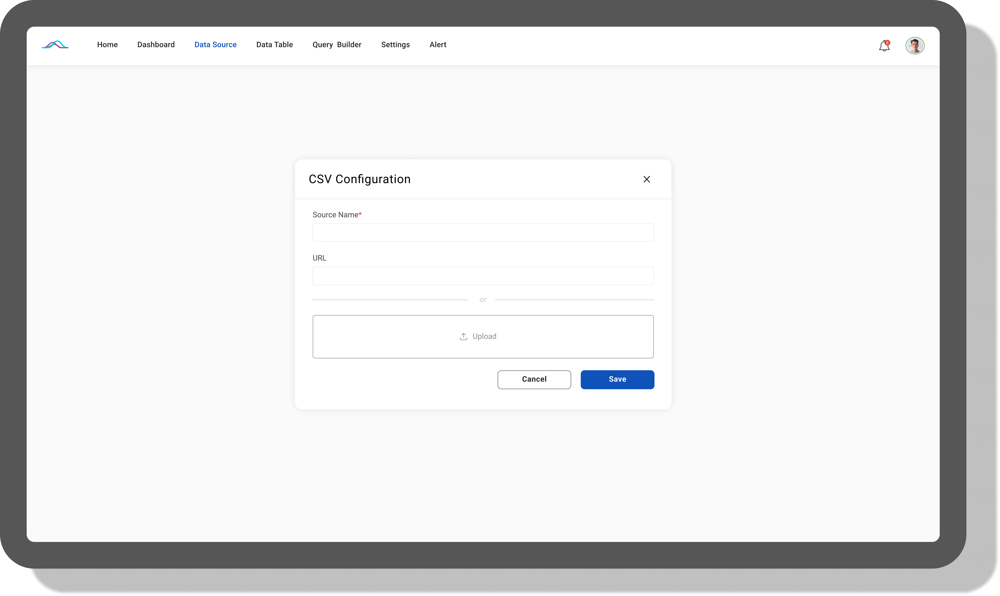
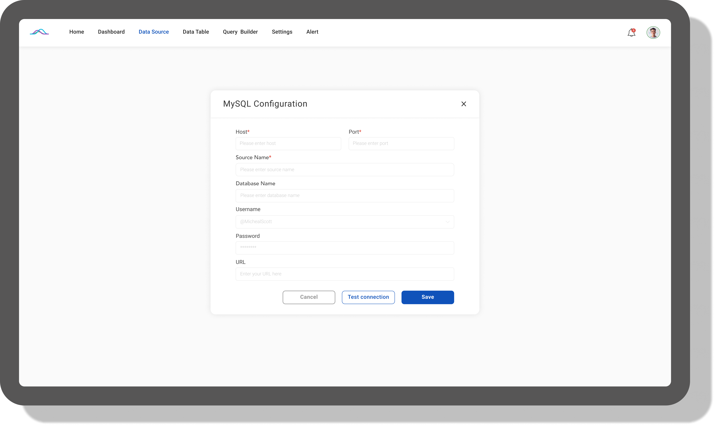

Multiple Data Sources
The application needed to support different data sources, each with its own configuration requirements and import process
A desktop web application designed to help users manage multiple data sources, build queries, and create customizable dashboards. My primary design contributions focused on the Dashboard, Data Control, Data Table, and Query Builder modules, translating complex data operations into structured interfaces.

Treelytics is a data analytics web application designed to bring data from multiple sources into one platform. It supports data integration through CCTV cameras, MySQL databases, and CSV files, allowing users to manage datasets, create queries, and visualize information through customizable dashboards.
I designed the core modules from scratch, including Dashboard, Data Source, Data Table, and Query Builder, translating product requirements into structured interfaces and workflows.
The goal was to create a unified and intuitive interface that simplifies data management, query building, and visualization through clear navigation, consistent design patterns, and well-organized data presentation.
The project covered the design of the core product experience, including:
My primary design responsibilities covered the core product modules.
The product was designed collaboratively by two designers over three months. I handled the majority of the core product interfaces, while my teammate took responsibility for Settings, Alerts, and User Profile. I collaborated with the lead developer and received feedback from the team.
The application needed to support different data sources, each with its own configuration requirements and import process
Users needed to configure datasets, manage table structures, and create queries through both SQL and visual builder interfaces
The platform needed to support different visualization formats and allow users to customize chart settings, layouts, and dashboard content
The design process focused on translating the technical product requirements into structured interfaces, exploring different ways to organize complex functionality, and refining the experience through interactive prototypes and feedback.
Treelytics was organized around its main product modules, allowing users to connect data sources, manage datasets, build queries, and create dashboards.
A shared visual foundation of color, typography, iconography, and reusable components to support consistency across the redesigned screens.

Roboto was used throughout the application to establish a clear typographic hierarchy and maintain readability across dashboards, tables, forms, and query panels.

Outline icons from Iconify were chosen to help users identify data tools and actions quickly, with a consistent size, stroke weight, and alignment across the interface.
| Property | Example |
|---|---|
| Icon Source | Iconify |
| Standard Size | 24 × 24 px |
| Stroke Weight | 2 px |
| Alignment | Center-aligned |
| Style | Outline |
I created reusable components, including the navbar, dashboard toolbar, buttons, properties panel, pages panel, collapsed navigation, and text fields, to keep the analytics workspace consistent.

The home screen gives users quick access to creating a dashboard or adding a data source. Favourite dashboards appear as preview cards, and a Recent Dashboards table lists each dashboard with its created date and actions to favourite, share or delete it.

The dashboard provides a workspace for creating and managing visualizations. Users can add charts, tables, images, text, and other elements, then customize their appearance through separate Data and Style panels.

The data source module allows users to configure CCTV cameras, MySQL databases, and CSV files. Each source has its own configuration interface and connection requirements.

The data table module supports dataset creation, schema selection, attribute configuration, and column management. Processing cards also provide visibility into ongoing file updates.

The Query Builder provides two ways to create queries: Code mode for writing SQL manually and Builder mode for creating queries through visual controls such as Filter, Order By, Group By, and Preview.

The settings module groups Profile, Manage User and Manage Role under one sidebar. Administrators can review their profile, search and add users, and switch each user's status on or off.

The alert module lists every alert rule with its query name, created date, period and status in one searchable table. Users can switch a rule on or off with a toggle, edit or delete it from the row actions, and create a new rule with Add Alert Rule.

Three key design decisions guided the design of the Treelytics interface: organizing data source configuration, supporting flexible query creation, and enabling customizable dashboard visualizations.





The project established a structured design foundation for a data analytics platform with multiple connected modules.
Designed interfaces for connecting sources and managing datasets.
Designed both SQL-based and visual query-building interfaces.
Supported different chart types, layouts, and visualization settings.
Established reusable components and shared visual guidelines across the core modules.
The project strengthened my experience in translating technical requirements into user-focused interfaces and designing complex, data-heavy desktop applications.
Take a look at some of my other design projects.